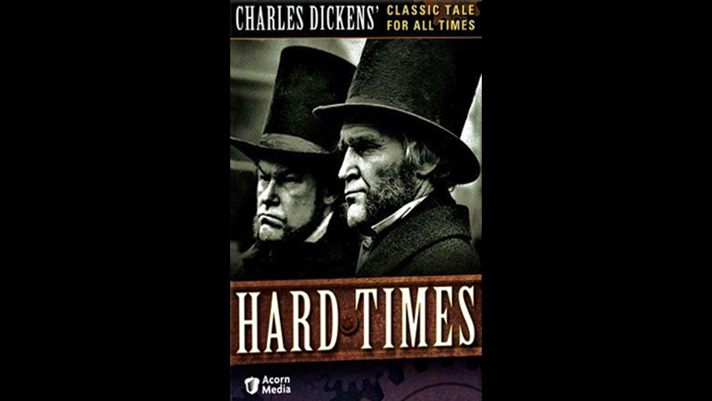

 |
||
 |
1977 |
 |
CAST |
||
|
||
Thomas Gradgrind |
- |
Patrick Allen |
Josiah Bounderby |
- |
Timothy West |
Tom Gradgrind |
- |
Richard Wren |
Louisa |
- |
Jacqueline Tong |
Rachael |
- |
Barbara Ewing |
Stephen Blackpool |
- |
Alan Dobie |
Sleary |
- |
Harry Markham |
Cecilia "Sissy" Jupe |
- |
Michelle Dibnah |
James Harthouse |
- |
Edward Fox |
Mrs. Sparsit |
- |
Rosalie Crutchley |
Bitzer |
- |
Sean Flanagan |
Mrs. Gradgrind |
- |
Ursula Howells |
Childers |
- |
Tony Heath |
Kidderminster |
- |
Michael Deeks |
Slackbridge |
- |
Patrick Durkin |
Waiter |
- |
Peter Martin |
Maid |
- |
Sally Adams |
Mrs. Blackpool |
- |
Brenda Elder |
Will |
- |
Barry Hart |
Workman |
- |
Bernard Latham |
Chairman |
- |
Bert Oxley |
Doctor |
- |
Alan Partington |
Maid |
- |
Sheila Price |
M'Choakumchild |
- |
Paul Ridley |
Bookmaker |
- |
Arthur Spreckley |
Mill Owner |
- |
Don Troedson |
Circus Performer |
- |
John Who |
CREATIVE TEAM |
||
Director |
- |
John Irvin |
Screenplay |
- |
Arthur Hopcraft |
PRODUCTION
|
||
Granada's critically acclaimed dramatisation of Charles Dickens' Hard Times (ITV, 1977) paved the way for its hugely successful literary dramas Brideshead Revisited (ITV, 1981) and The Jewel in the Crown (ITV, 1984) and its Sherlock Holmes Mysteries (ITV, 1984-94) starring Jeremy Brett. Originally published in weekly instalments in 1854, Hard Times tells the story of Thomas Gradgrind and his dutiful daughter Louisa against the backdrop of the industrial north in the fictional Coketown, partly modelled on Manchester, where the serial was filmed (using the old railway yard behind Granada's studios). The four-part adaptation by Arthur Hopcraft is streamlined but generally very faithful to the book. Although large chunks of Dickens' dialogue remain intact, Hopcraft was inevitably forced to prune the text quite considerably. As a result, Mrs Gradgrind's role is reduced (although her celebrated death-bed scene remains), while some characters were removed entirely (such as Bitzer and Gradgrind's two youngest children). This sadly also extends to Bounderby's mother, whose appearance in the novel reveals that his repeated sermons about his harsh upbringing are largely a fabrication. Hopcraft's adaptation shows conflict articulated on screen through a series of contrasts, beginning with the arrival of the travelling circus, which exemplifies the world of 'fancy' and creativity, as it passes outside Gradgrind's school, where children are taught that only facts have merit. This contrast is then starkly emphasised when Sissy has to decide whether to stay with her extended circus family or to leave it for the sake of an education. This finds a powerful echo when, in the concluding episode, Tom joins the circus to evade the authorities. Malcolm Arnold's theme music, full of foreboding and appropriately scored for brass, matches the atmospheric cinematography by Ray Goode, both complementing Irvin's incisive yet understated direction. His handling of the cast is exemplary, with Alan Dobie and Timothy West predictably fine as the dour Blackpool and the ludicrous Bounderby respectively. Patrick Allen, however, is a revelation as Gradgrind, utterly convincing as a man deeply in the sway of Jeremy Bentham's Utilitarianist world-view, who eventually finds that family love outweighs his beliefs in social engineering. |
||
|
|
|